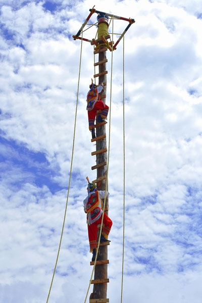

"A growth mindset see challenges as opportunities for growth"
What is Growth Mindset?
A growth mindset is a transformative approach to learning and development
that empowers individuals to embrace challenges, persist through setbacks,
and ultimately achieve higher levels of success. Rooted in the belief that
abilities and intelligence can be developed through dedication and hard work,
it contrasts with a fixed mindset, which assumes that abilities are innate
and unchangeable.
What Stops Growth?
Central to the growth mindset is the idea that failures and difficulties are not
indicators of a person's limitations, but rather opportunities for learning and
improvement. Instead of viewing setbacks as discouraging roadblocks, individuals
with a growth mindset see them as stepping stones on the path to mastery. This outlook
fosters resilience and tenacity, enabling individuals to persevere in the face of obstacles.

Embrace Growth
Embracing challenges is a cornerstone of the growth mindset. Rather than shying away from
difficult tasks, individuals actively seek them out, recognizing that they provide the
greatest potential for growth. They approach challenges with a sense of curiosity and a
willingness to stretch their abilities, knowing that even if they don't immediately succeed,
they are still expanding their skills and knowledge.
Trying Your Best
Effort is highly valued in a growth mindset. It's understood that hard work, dedication,
and deliberate practice are the keys to improvement. This mindset rejects the notion of
innate talent as the primary determinant of success, instead attributing achievement to a
combination of effort and strategy. This perspective empowers individuals to take ownership
of their progress and strive for excellence.
Growing
Feedback is welcomed and appreciated in a growth mindset. Constructive criticism is
seen as an invaluable source of information for refining skills and knowledge.
It's not taken personally, but rather as a means to accelerate growth and
development.
The Future
Furthermore, individuals with a growth mindset are inspired by the success of others.
They see others' achievements not as threats, but as evidence of what is possible
with dedication and hard work. They are eager to learn from and collaborate with
those who have excelled in their field.
Conclusion
In essence, the growth mindset is a powerful philosophy that unlocks human potential.
By embracing challenges, valuing effort, seeking feedback, and celebrating the
success of others, individuals can cultivate a mindset that propels them toward
continuous learning, improvement, and ultimately, their highest levels of
achievement.